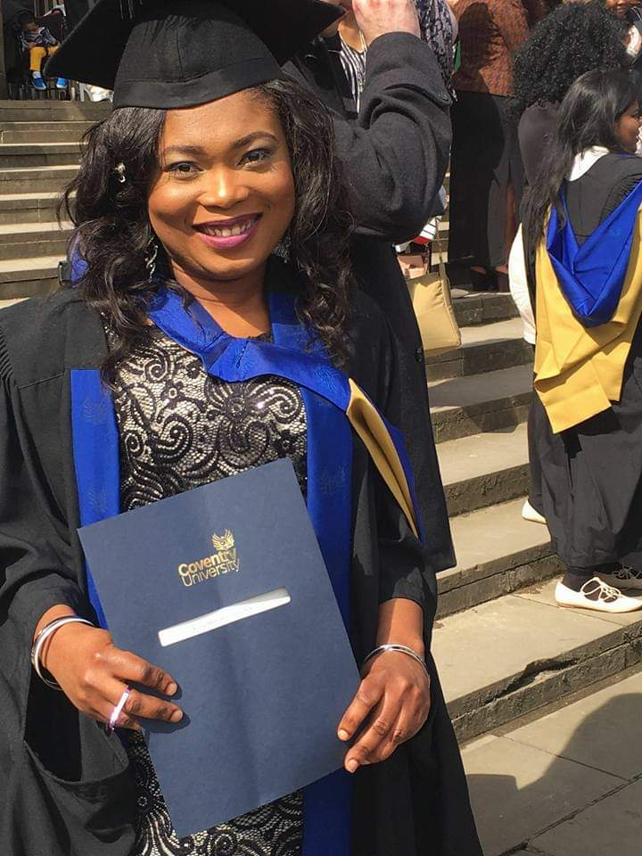

Constance Soye Young-Harry
M.Sc - Network Computing
Personal Summary
“ Constance has a Distinction in MSc Network Computing graduate with a high level
of technical competence, a strong learning aptitude and an excellent work ethic. She
is a technical expert in a number of network areas.
Education and Training
M.Sc Network Computing
Distinction
Coventry University, England, United Kingdom
B.Sc, Computer Science
Rivers State University
Rivers State, Nigeria.
West African Examination Council (WAEC)
Community Comprehensive Secondary School, Angiama
Bayelsa State, Nigeria.
Work Experience
Community Secondary School, Rumuomasi, Port Harcourt, Rivers State
November 2020 - Till Date
Position: Science Teacher (Mathematics, Physics and Computer Studies)
Roles:
- Evaluate and grade students' class work, laboratory work, assignments, and
papers.
- Prepare and deliver lectures to students on topics such as quantum mechanics,
particle physics, and optics.
- Compile, administer, and grade examinations, or assign this work to others.
- Maintain student attendance records, grades, and other required records.
Supervise students' laboratory work.
Kalabari National College, Rivers State, Nigeria
August, 2013 - October, 2020
Position: Computer Studies/Mathematics Teacher
Roles:
- Teaching students Mathematics and Computer Science courses (Computer
appreciation, MS-Office, Basic Networking, Basic Programming, Basic Graphic
Design, Basic Computer troubleshooting etc)
- Planning lessons and activities that facilitate students' acquisition of basic and
advanced computer skills.
- Instructing in a manner that develops students' confidence in their abilities.
- Observing and managing classroom dynamics.
- Invigilating and grading projects, quizzes, and examinations.
- Tracking and communicating students' advancement throughout the course.
OCS Group, West Midlands, UK
March 2015 - November 2015
Position: Retail Stock Taking Worker
Roles:
- Inventory Resorting
- Order Management and Product Counting
- Quality Checks and Loss Prevention
Technicolor, Rugby, UK
July 2015 - March 2016
Position: Retail Stock Taking Worker
Roles:
- Sorting and Packaging
- Wapping and Labelling
- Shipping Goods
Megatech Earth Digital Systems, Port Harcourt, Rivers State
November 2010 - July 2013
Position: Biometric/ Capturing of Biometric Data
Roles:
- Customer care/Biometric staff, capturing of biometrics data
- Handle requests and transactions, or direct the matter or person to the proper
department
- Prepare files documents in MS-Word by using predefined templates or by
creating them from the scratch.
- Assess the needs of customers and provide information concerning the services,
procedures, and guidelines of the firm.
- Performed tasks assigned to me by my Supervisor.
- Enter data and forward paperwork afterwards.
Hard Amenities Limited, Port Harcourt, Rivers State
May 2010 - October 2010
Position : Data Entry Staff
Roles:
- Capturing raw data.
- Scheduling of job roles and responsibilities to team members
- Team leader
- Liaising between team-members and project managers
Professional Skills
Teamwork and Leadership: Successfully led and managed teams and groups
ranging from 20-800 people from across different backgrounds
Microsoft Office/I.T: Proficient in the use of MS-Word, Power point, Excel and
Outlook, understanding of IP addressing and TCP/IP networking.
Digital Marketing: an understanding of digital marketing techniques, search
engine optimization and marketing. Completed an online course; Google Digital
Garage online training on digital marketing.
Business Management and Sales: Manages sales and business development
for a substantial group to deliver annual business objectives
Public Speaking: Excellent at speaking to and convincing people, selling out
ideas, products and/or services to them.
Social Media: Skillful usage of social media to drive sales and publicity.
Languages: English (full professional proficiency), french (elementary
proficiency)
Fantastic Cook.
Leadership and Awards
Award of Excellence: Foursquare Gospel Church November2017
National Headquaters, Lagos State, Nigeria.
Global Leadership Programme
April 2016
Coventry University Global Leadership Programme
Coventry University, England, United Kingdom
My Profile Picture

Click the links below for further details
My Hobbies
My Contact Details